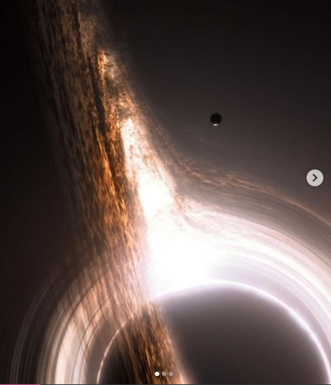

O maior buraco negro de todo o universo! É conhecido como “Ton 618”

Atualmente, o maior buraco negro conhecido, alimentando o quasar TON 618, tem uma massa de 66 bilhões de massas solares 🤯
Se você não está familiarizado com buracos negros, deixe-me explicar: um buraco negro é uma região no espaço onde nada pode escapar dele, nem mesmo a luz. Um buraco negro se forma quando uma estrela massiva explode em um evento conhecido como supernova.
Mencione alguém que adoraria ver isso 🔥 Para mais conteúdo espacial🚀 🔭 siga nossa página @astronomiaum e ativem as notificações.
Telegram na bio do nosso Instagram 🚀🔭
- Cenas ilustrtaivas do filme Interestelar.
#Astronomia #BuracoNegro #Sapce #Universe #NASA #StephenHawking #físico #Física #Lindo #Filme #Interestelar #Universo #ciência #Science #Astronomy #Planeta #Terra #Estrelas #JamesWebb #Hubble #Galáxias #Astronomiaum